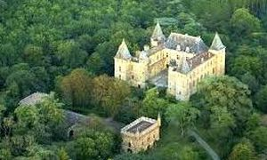
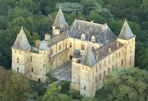
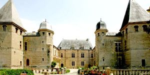
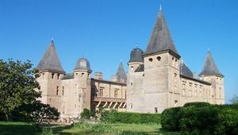
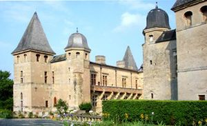
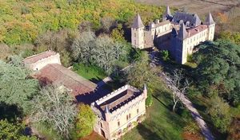
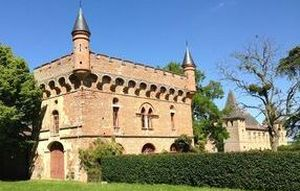

Recensement Jean-Claude Truffet
| Département | 32 — Gers |
| Canton | Samatan |
| Commune | Cazaux-Savès |
| Type d'édifice | Forteresse |
| Période d'origine | XVI |







CAUMONT, la seigneurie sera érigée en vicomté en 1342 par le roi Philippe VI de Valois au bénéfice du baron Bernard de Marestang, château construit par Pierre de Nogaret de la Valette duc d'Epernon, qui servit les rois Henri III et Henri IV. Au milieu du XVIe siècle, à son retour des guerres d'Italie. La seigneurie entre dans la famille Nogaret de La Valette par le mariage, le 21 avril 1521, de Marguerite de l'Isle, dame de Cazaux et de Caumont, avec Pierre de Nogaret, seigneur de La Valette. C'est ce dernier qui fait édifier le château actuel de 1525 à 1535. En 1554, y naquit son petit fils, Jean-Louis de Nogaret de La Valette, Duc d'Epernon et Cadet de Gascogne qui servit Henry III et Henri IV. Cette illustre famille fut aussi responsable de l'édification du château de Cadillac aux portes de Bordeaux, Au XIXe siècle, Armand, Marquis de Castelbajac, y vécu entre les campagnes de la Grande Armée avant de partir pour la Russie comme ambassadeur de Napoléon III. Il y revint et consacra la fin de sa vie au département du Gers en temps que sénateur et président du Conseil Général. Un peu plus tard, le marquis de Castelbajac fit hausser les toitures et les fit recouvrir d'ardoise, matériau peu utilisé dans cette région. Dans les années 1980, le vicomte et la vicomtesse Jean de Castelbajac ont entrepris d'importants travaux pour redonner à la cour d'honneur son aspect d'origine, ce qui y permet de nouveau l'organisation de concerts et d'événements. Le château est toujours à ce jour propriété de la famille de Castelbajac depuis des générations.
Caumont de la renaissance française avec une partie du château fort d'origine, le territoire sur lequel fut construit une première fortification au XIIe siècle, Caumont est construit sur les vestiges d'un château fort ayant appartenu à Gaston Phébus, la plus grande partie du château date de la deuxième moitié du XVIe siècle. On y accède par une vaste esplanade de 62 ares aboutissant à une basse-cour avec un long bâtiment très remanié qu'abritent les écuries. Le château déploie trois grandes ailes ouvertes sur une cour intérieure bornée par deux tourelles hexagonales à toitures en bulbes. Quatre pavillons de plan losangé à hauts toits à quatre eaux, couverts d'ardoise flanquent les angles. Les élévations extérieures sont assez austères et trahissent encore une préoccupation défensive. Deux vastes étages de sous-sols voûtés marqués de nombreuses pièces à usage défini témoignent encore de l'activité importante du château qui employait de nombreux domestiques jusqu'au milieu du XXe siècle. Les façades sur cour sont très harmonieuses. Elles alternent pierre et brique. Sur les façades ouest et sud : croisées et demi-croisées surmontées d'oculi. Au sud, une coursière (une galerie extérieure) repose sur de robustes consoles sculptées, comme dans certains hôtels particuliers toulousains (hôtel de Bernuy, hôtel d'Assézat). Depuis cette coursière, il est possible d'admirer le parc et ses cèdres du Liban. Il est possible, ensuite de rejoindre la cour d'honneur du château par un escalier à vis du XVIe siècle.
En 1658, un incendie détruisit l'aile sud qui fut alors reconstruite dans un même esprit mais dans un style classique plus affirmé : bossage, travées rythmiques.
Famille Nogaret de La Valette Famille de Castelbajac
"
Château de Caumont à Cazaux Savès